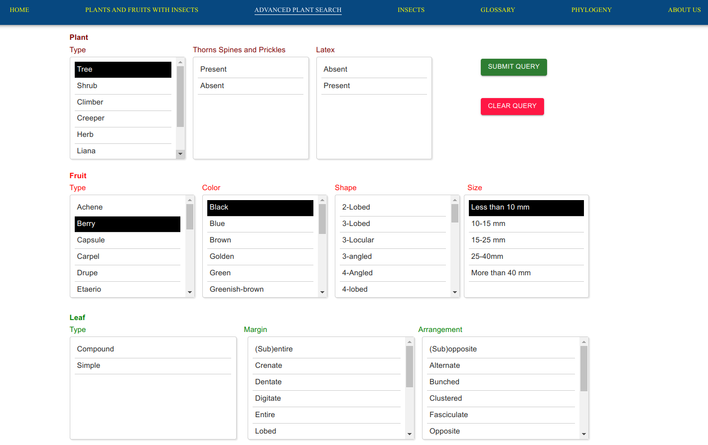
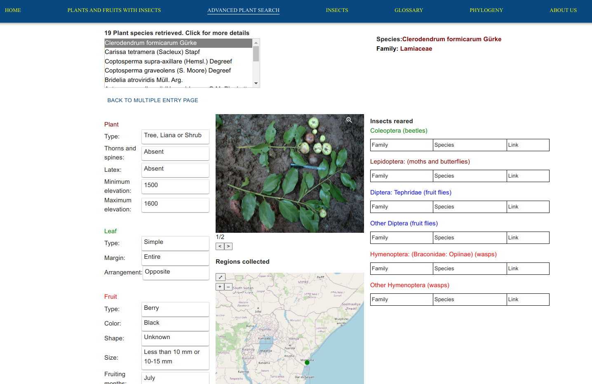
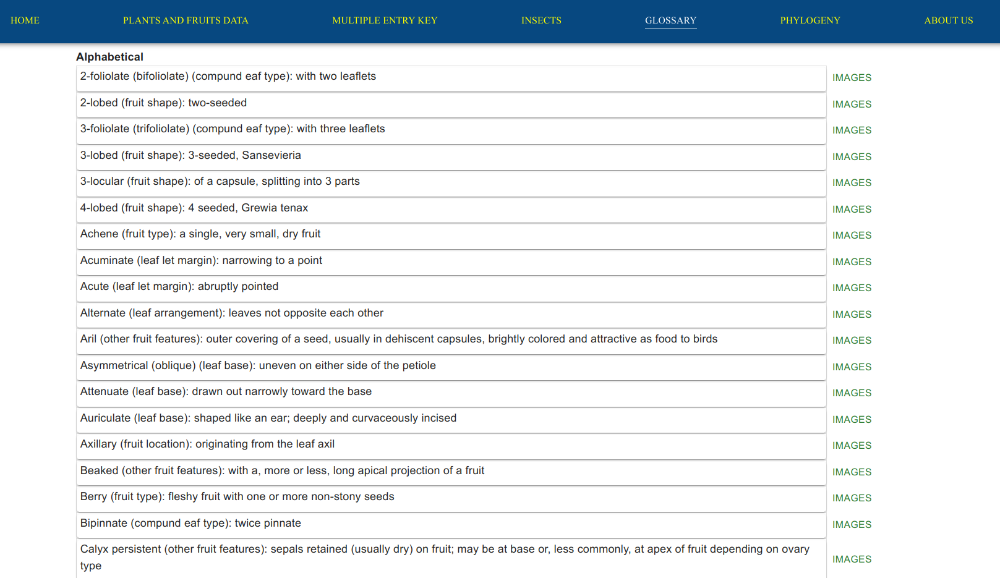

This Platform enable users to examine the data of the wild fruits of Kenya and their associated insect fauna, specifically those that use fruits in their breeding cycles.
The plant database contains approximately 873 plant types, primarily species with some subspecies and varieties. The majority of these species are indigenous to Kenya, but the database also encompasses certain non-native, species like guava and cultivated species like mango. During the early stages of the project, the collection were focused on plants likely to attract frugivorous tephritids, which skewed the sampling towards fruits with fleshy pulp. Notably, some significant plant taxa, including many from the Asteraceae, Burseraceae, and Fabaceae families, have fewer species with fleshy fruits and were sampled less frequently. Furthermore, our concentration was primarily on woody plants, as they typically produce a greater abundance of fruits compared to herbaceous plants. While our coverage of woody plants wasn't exhaustive, it was substantial, encompassing approximately 40% of all species and a significantly higher percentage of those with fleshy fruits. This coverage aligns closely with the information found in "Kenya Trees Shrubs and Lianas" (Beentje 1994), a comprehensive guide for identifying woody plants in Kenya. We also extensively sampled certain other plant groups, such as the herbaceous Cucurbitaceae and Vitaceae, as well as the parasitic Loranthaceae (mistletoes). Additionally, we included representatives from specific plant families, like Asteraceae and Acanthaceae, which are consumed by different fruit fly groups, some of which feed on flower parts while others consume both flowers and fruits.
The Platform is organized in page format. Each main page is selected by clicking on one of the tabs at the top of the screen. The main data-related pages corresponding to the tabs are;
When using the "Plant and Fruit Data” page, individual plant species are generated by clicking on that species’ name. A plant data page contains a photo, morphology, description of the plant, expandable photographs, and a map showing the geographical distribution of the plant, as well as its fruiting phenology, the latter determined empirically during this project. A list of insects reared from the fruit is also provided.
Species page for Drypetes gerrardii.
Users select one or more values for each of several character states (e.g. fruit color, leaf type, etc.) by clicking on the appropriate entries. All selections within a character box are “or”, not “and”, selections, making the key inclusive, not exclusive. Say, for example, you have made a collection from a single plant species with compound leaves that are trifoliolate (three leaflets per leaf), and whose fruits include both red and yellow ones. You would select both colors in the Fruit color box. If the fruit from your plant is described in the literature as being yellow only, selecting red in addition to yellow will not eliminate the correct plant from the list generated by your query, because you have included yellow. Additionally, clicking on trifoliolate in the leaf type box will not exclude the correct plant from the results even if it is described in the literature as having 3 or 5 leaflets. Submitting a query will return a list of one or more plant names. Selecting a plant name from the list brings up the data page for that species.
Example of character-state selections using the multiple-entry key.
Results page generated by the query.
It is not necessary to select a value for each character state. While not selecting a value for one or more character states diminishes the strength of your search, you may very well have entered enough values for other characters to identify your plant or to narrow the possibilities considerably. For example, you may not know whether your plant contains latex. Just leave out that character state.
In the key, we have tried to keep technical terms to a minimum to enable non-specialists to use the key. Thus, for example, when examining the leaf or leaflet edge or margin, the term “with sharp or rounded teeth” includes margins more technically described as “dentate”, “serrate” or “crenate”. Many terms in the key are represented in the illustrated glossaries. Double-clicking on a term will call up the definition and one or more images illustrating it. In putting together the glossary we relied on several sources, particularly The Cambridge Illustrated Glossary of Botanical Terms (Hickey & King 2000).
When using the “Browse Insects Reared from Fruit” page, selecting an insect species generates a page with information on that species, including a list of fruit species from which that insect was reared. Clicking on any fruit species in the list will generate the data page for that plant. To return to where you were on the “Browse Insects Reared from Fruit” page, simply click on “Browse Insects Reared from Fruit” on the tab panel at the top of the page.
Browse Insects page with Ceratitis fruit flies selected.
Page with list of Ceratitis species, and information and image for the default species (the first in the alphabetically sorted list).
An illustrated glossary of botanical terms can be used as a primary teaching tool, or referred to when using the multiple-entry key to the plants to call up definitions and images of plant structures and features. Double-clicking on a term in the key will bring up its definition in the glossary. Photographic images illustrating a term are accessed by clicking on the “images” button to the right of each definition. Some self-evident terms are not illustrated. A general, alphabetically arranged glossary is available as are category-related glossaries (e.g. terms related to leaf margin characteristics, fruit shapes, etc.).
The alphabetically-ordered Glossary page.
The same glossary page with "Subglobose (fruit shape)" selected.
Distributional data is also provided nd displayed on the map indicating areas where we collected specific fruit species during the project. Additionally, areas where fruits were collected that produced particular insect species are indicated on the Browse Insects pages. Areas were defined as follows.
In The "Phylogeny" page the phylogentics ree for the plant and insects are shown based on their families. are determined by their barcodes. The labels for the endpoints (terminal taxa) include the species name, followed by the species ID sourced from the local database, and subsequently the NCBI accession. The barcodes used to construct the phylogeny were maturase K for plants and Cytochrome oxidase sub-unit I (COI) for insects. Clicking on each species name provides users with options to access external databases or locally linked morphological information.
Phylogeny page for Phyllanthaceae plant family. The phylogeny tree shows that certain species display no genetic divergence based on their barcodes, as seen in Margaritaria discoidea.Flueggea virosa exhibits genetic variance among its species, potentially attributed to geographical differences.
Fruit size is one of the characteristics of individual plant species that appear on its data page. It is also one of the characters found in the multiple-entry key. Fruit size is a continuous variable, and to keep things manageable, we defined 5 size classes (<10mm, 10-15mm, 15-25mm, 25-40mm, and >40mm), based on the length of the fruit along its longest dimension. Often, more than one fruit size class is listed on a fruit data page, each class separated by a semicolon. For example, on the data page for the cucurbit Oreosyce africana (Cucurbitaceae) two size classes are indicated, 10-15mm; 15-25mm. This simply means that mature fruits of this species occur in sizes that fall within the limits of the two size classes, not necessarily that they range from 10 to 25mm (in fact such a case would be rare). A species with fruits from 12-17mm would fall in these classes, as would a species whose fruits range from 10-24mm.
With few exceptions, digital images of freshly collected fruits and, in most cases, associated stem and leaf specimens were made in the field. Throughout the project I used either a Fujifilm 2.8 megapixel digital camera, a Nikon Coolpix 4300 digital camera, or a Canon IS3S digital camera to capture images of fruits. Flash was avoided whenever possible to limit high contrast, shadowy images, and to capture natural coloration. In most cases, plant specimens were collected with a long-arm pruner and arranged on the ground with associated fruits. Images of a few infraspecific taxa (subspecies, varieties) are also included. Multiple images are usually provided, including wide-angle to close-up views of plant specimen, fruit, and flowers (when present). A writing pen was placed in the field of view to provide scale. The diameter of the pen barrel is approximately 10 mm. Photographs of entire plants were seldom made, because of the difficulty of controlling contrast and avoiding confusing backgrounds. In all, 2224 images are included representing 866 of the 928 plant taxa collected.
Because this was a fruit fly project we concentrated on capturing images of live adult tephritids. Photographs are provided for 111 tephritid species. Usually, examples of both sexes are available, and this is always the case for sexually dimorphic species. Tephritidae, and representatives of several other insect taxa that were reared from fruits, were held with water and a sugar/yeast diet for 3-4 days. Thereafter they were starved for 24 h. They were then transferred to a 20 x 15 x 2.5 cm Plexiglas (Perspex) cage with a removable pane of glass through which photographs were taken. The dull, non-reflective underside of an avocado leaf was generally used as background. Sugar syrup was dotted on the veins of the leaf. Feeding insects remained stationary and were easily photographed. Kodachrome 64 slide film was used throughout. The photographic setup consisted of a CANON F1 camera body and a 100 mm macro lenses, to which a “12x” Raynox Microexplorer supplemental lens was attached. Two weak flashes mounted at either ends of a Lepp Macrobracket provided illumination.
There are also many photographs of pinned adult Hymenoptera and Lepidoptera, and of the genitalia of some moths. We also provide representative examples of most of the other insect taxa. In all, 614 images are included representing 422 of the insect species we reared.